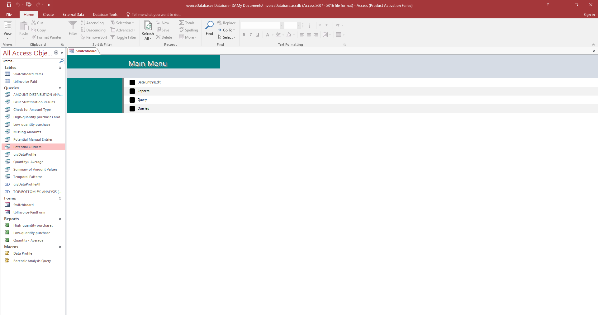

In this project, I began with an Excel-based data profiling task using Power Query. The goal was to understand the structure and quality of data to determine if there were potential issues such as fraud, data duplication, or anomalies in transactional data. This initial profiling step helped in making decisions about whether further forensic analysis was required.

After profiling the data, I moved to a more advanced level of analysis using SQL within Microsoft Access. I performed a complete forensic analysis on invoice data. To enhance usability, I created a Switchboard interface that allows users to:
